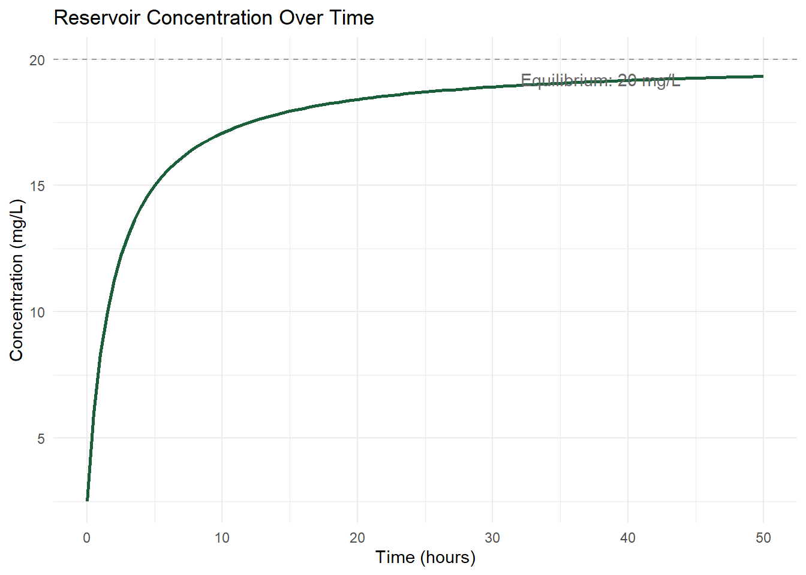

Chapter 8 Rational Functions & Angular Measure
8.1 Learning Objectives
By the end of this chapter, you will be able to:
- Identify asymptotes and domain restrictions of a rational function.
- Interpret the long-run behavior of a rational function in context.
- Convert between degrees and radians.
- Compute arc length.
8.2 Rational Functions
A rational function is a ratio of two polynomials, \(f(x) = \dfrac{p(x)}{q(x)}\). Two features matter most for interpretation:
- Domain restrictions: \(f(x)\) is undefined wherever \(q(x) = 0\), since division by zero is undefined.
- Asymptotes: a vertical asymptote occurs at an \(x\)-value where the denominator hits zero (and the numerator doesn’t); a horizontal asymptote describes the value \(f(x)\) approaches as \(x\) grows very large in either direction.
8.2.1 Worked Example: A Dilution / Equilibrium Model
Suppose a pollutant is continuously discharged into a reservoir at a constant rate, while clean water also flows in and dilutes it. A model for concentration over time might be:
\[ C(t) = \frac{20t + 5}{t + 2} \]
where \(t\) is time in hours and \(C(t)\) is concentration in mg/L.
Step 1 — Find the domain restriction. The denominator is zero when \(t = -2\). Since \(t\) represents time starting at 0, this restriction doesn’t come up in the physically meaningful part of the domain (\(t \ge 0\)) — but it’s worth noting as a place the formula itself breaks down.
Step 2 — Find the horizontal asymptote. As \(t\) grows very large, both the numerator and denominator are dominated by their \(t\)-terms, so:
\[ C(t) \to \frac{20t}{t} = 20 \quad \text{as } t \to \infty \]
Step 3 — Interpret. No matter how long this process runs, the concentration approaches — but never quite reaches — an equilibrium value of 20 mg/L. This is a common shape for dilution problems: a rational function’s horizontal asymptote represents the long-run steady state.

Figure 8.1: Pollutant concentration over time approaching a horizontal asymptote at 20 mg/L.
Concept Check: Finding Asymptotes
1. For \(f(x) = \dfrac{3x+1}{x-4}\), what is the domain restriction (vertical asymptote location)?
Click to reveal answer
The denominator is zero at \(x=4\), so \(f\) is undefined there — a vertical asymptote at \(x=4\).
2. For \(f(x) = \dfrac{5x+2}{x+1}\), what is the horizontal asymptote, and what does it represent if \(f\) models a long-run concentration?
Click to reveal answer
As \(x\to\infty\), \(f(x) \to \dfrac{5x}{x} = 5\). If this models concentration over time, \(5\) is the equilibrium value the concentration approaches in the long run.
8.3 Angular Measure
Angles can be measured in degrees (a full circle is \(360°\)) or radians (a full circle is \(2\pi\) radians). Radians are defined so that an angle’s measure equals the arc length it sweeps out on a unit circle (radius 1) — which is why radians, not degrees, are the natural unit for the trigonometric work in Chapters 8–10.
8.3.1 Converting Between Degrees and Radians
\[ \text{radians} = \text{degrees} \times \frac{\pi}{180} \]
8.3.2 Worked Example: Converting Wind Direction
A weather station reports wind direction as \(225°\) (a compass bearing). Convert this to radians.
Step 1 — Apply the conversion.
\[ 225 \times \frac{\pi}{180} = \frac{225\pi}{180} = \frac{5\pi}{4} \text{ radians} \]
Step 2 — Sanity check. \(\frac{5\pi}{4} \approx 3.93\) radians, and since a full circle is \(2\pi \approx 6.28\) radians, this is a bit past the halfway point around the circle — consistent with \(225°\) being past \(180°\) (halfway) on a \(360°\) compass.
8.3.3 Arc Length
For a circle of radius \(r\), an angle \(\theta\) measured in radians sweeps out an arc of length:
\[ s = r\theta \]
8.3.4 Worked Example: Distance Along a Circular Buffer
Recall the 150 m contamination buffer zone from Chapter 2, centered on the Downstream Well. Regulators want to know the length of shoreline within a \(60°\) wedge of that buffer that needs sampling.
Step 1 — Convert \(60°\) to radians.
\[ 60 \times \frac{\pi}{180} = \frac{\pi}{3} \approx 1.047 \text{ radians} \]
Step 2 — Apply the arc length formula with \(r = 150\) m.
\[ s = 150 \times \frac{\pi}{3} = 50\pi \approx 157.1 \text{ m} \]
Step 3 — Interpret. About 157 meters of the buffer’s boundary falls within that 60° wedge and needs to be included in the sampling plan.
Concept Check: Degree-Radian Conversion
1. Convert \(90°\) to radians.
Click to reveal answer
\(90 \times \dfrac{\pi}{180} = \dfrac{\pi}{2}\) radians.
2. A circle has radius 40 m. What arc length corresponds to an angle of \(\frac{\pi}{6}\) radians?
Click to reveal answer
\(s = r\theta = 40 \times \dfrac{\pi}{6} = \dfrac{40\pi}{6} = \dfrac{20\pi}{3} \approx 20.9\) m.
8.4 Practice: Dilution / Equilibrium Modeling
8.4.1 What Are You Practicing?
Finding domain restrictions and horizontal asymptotes of rational functions modeling dilution or equilibrium processes, and converting between degrees, radians, and arc length for circular geometry problems.
8.4.2 How to Approach These Problems
- For a rational function: find where the denominator is zero (domain/vertical asymptote), then examine the ratio of leading terms as \(x\) grows large (horizontal asymptote).
- For angular measure: identify whether you’re starting in degrees or radians, apply the correct conversion factor, and use \(s=r\theta\) only when \(\theta\) is in radians.
8.4.3 Practice Problems
1. A treatment process models contaminant concentration as \(C(t) = \dfrac{100}{t+5}\), \(t\) in hours. Find the domain restriction and describe what happens to concentration as \(t\) grows very large.
Click to reveal solution
Domain restriction: \(t=-5\) (outside the physical domain \(t\ge0\)). As \(t\to\infty\), \(C(t)\to 0\) — concentration approaches zero (full dilution) in the long run, since the numerator is a constant while the denominator grows without bound.
2. A wildlife tracking collar sweeps a directional antenna through \(150°\) to scan for a signal. If the antenna’s effective range forms an arc of radius 2 km, how long is the arc swept?
Click to reveal solution
Convert: \(150 \times \dfrac{\pi}{180} = \dfrac{5\pi}{6}\) radians. Arc length: \(s = 2 \times \dfrac{5\pi}{6} = \dfrac{5\pi}{3} \approx 5.24\) km.
8.5 Skills Drills
8.5.1 Simplifying Rational Expressions
Find the domain restriction(s) of each function.
- \(f(x) = \dfrac{x+1}{x-3}\)
- \(f(x) = \dfrac{2x}{x^2-9}\)
- \(f(x) = \dfrac{5}{x+7}\)
- \(f(x) = \dfrac{x-2}{x^2-4}\)
Click to reveal answers
- \(x=3\)
- \(x^2-9=0 \Rightarrow x=3, x=-3\)
- \(x=-7\)
- \(x^2-4=0 \Rightarrow x=2, x=-2\)